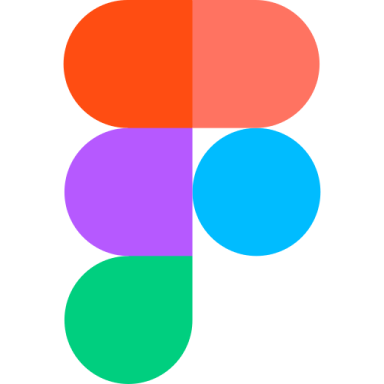
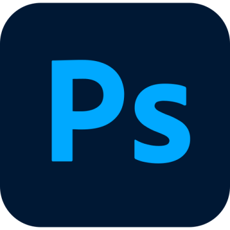
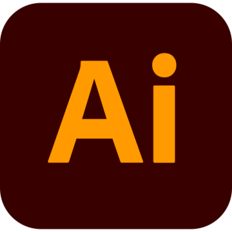
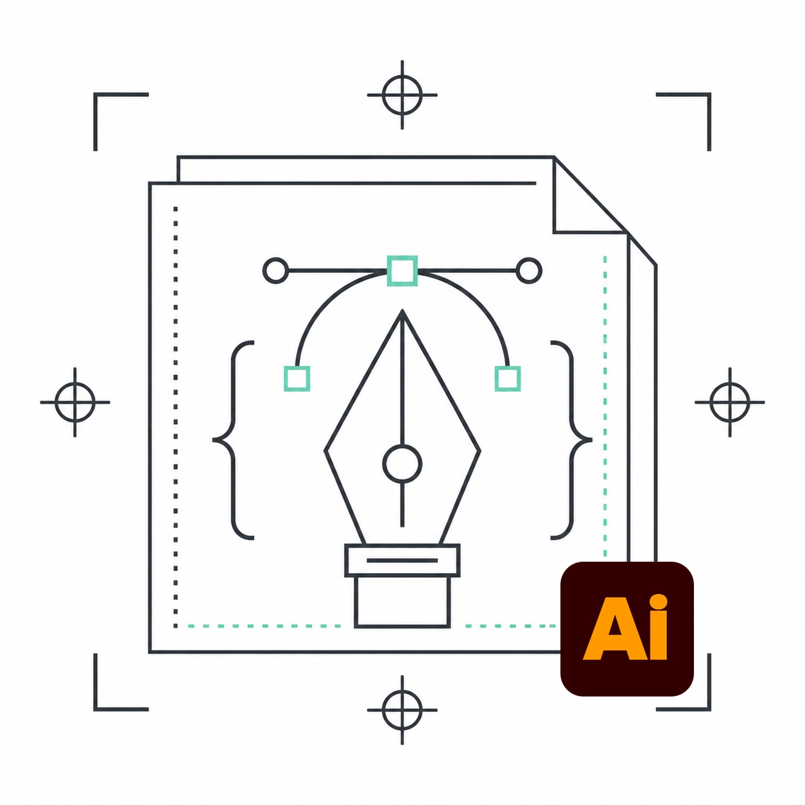
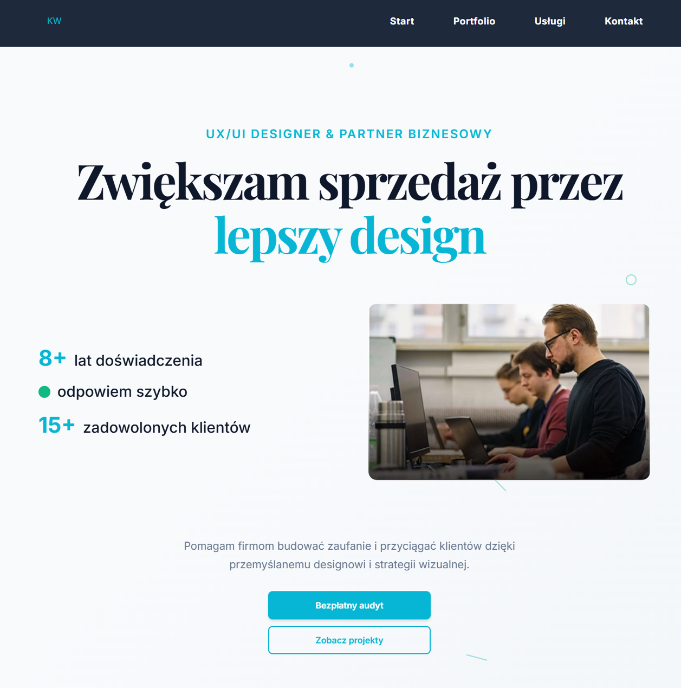

Digital Product Designer · Automatyzacje · Procesy
Projektuję i wdrażam produkty cyfrowe, automatyzacje i usprawnienia procesów biznesowych
Od ~8 lat projektuję produkty cyfrowe, a od kilku lat łączę projektowanie z automatyzacjami i rozwijaniem aplikacji biznesowych. Pracuję od analizy procesu, przez projekt, po działające rozwiązanie wdrożone u klienta. Mam za sobą 5 stron internetowych, ponad 10 zautomatyzowanych procesów i aplikację dla drukarni, która skróciła wycenę z około godziny do około 5 minut.
Poligrafia · Webdesign
~10 lat pracy zawodowej · ~8 lat w designie
5 stron · 1 aplikacja biznesowa · 10+ automatyzacji
Analiza → projekt → budowa → testy → wdrożenie



Realizacje od analizy problemu po wdrożenie — strony, aplikacje i automatyzacje zaprojektowane pod konkretny proces

Profesjonalny sklep internetowy z identyfikacją wizualną marki.

Kompleksowa strona marki dla trenerki odporności psychicznej.

Wtyczka CEP do Adobe Illustrator wykrywająca błędy kolorów i zbyt cienkich linii przed drukiem.
Rebranding i projektowanie opakowań dla marki premium herbat.

Nowoczesna strona internetowa połączenie case studie i usługi .

Kompleksowy system cyfrowy dla drukarni: kalkulator wycen, PWA offline i strona internetowa.